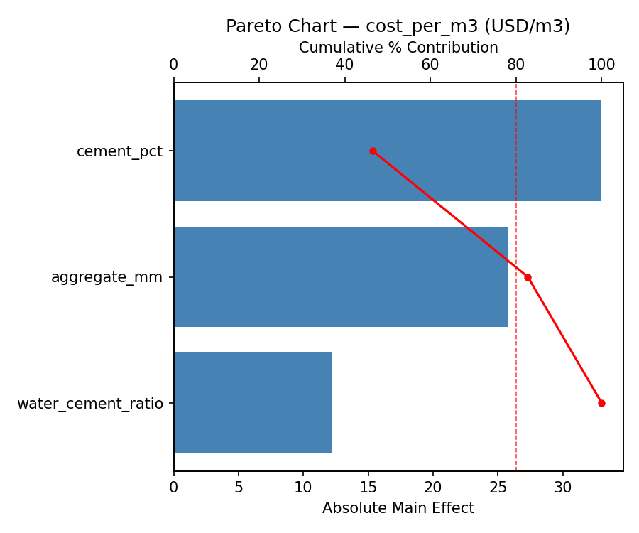
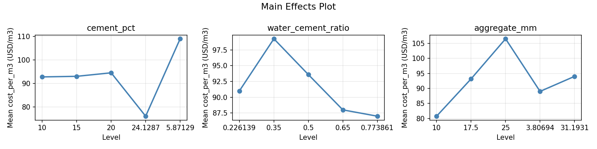
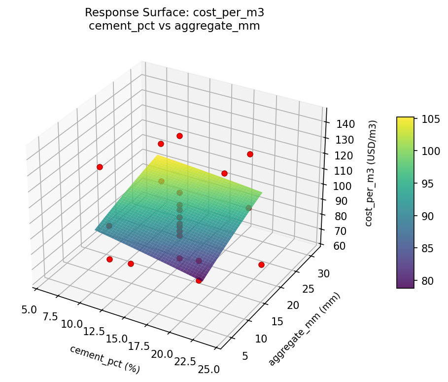
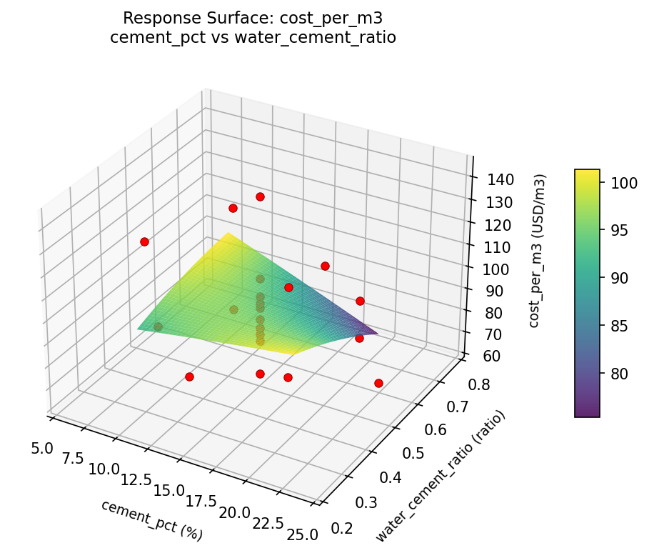
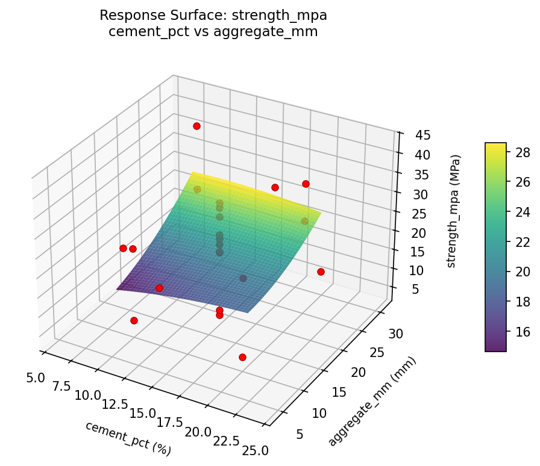
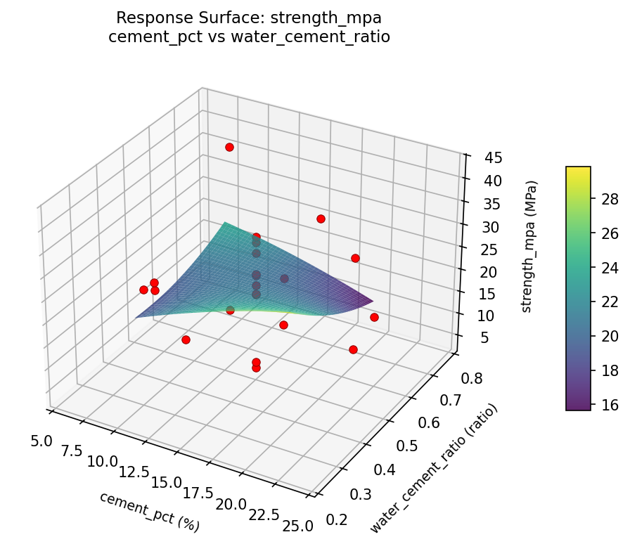
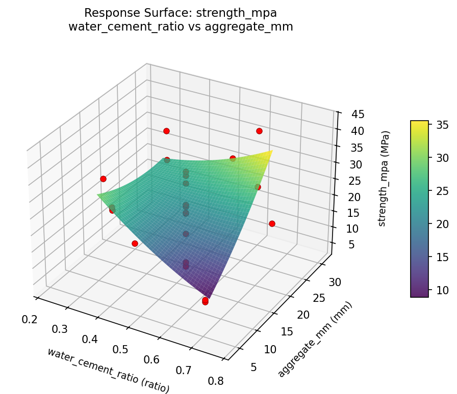

Summary
This experiment investigates diy concrete mix design. Central composite design to maximize compressive strength and minimize cost by tuning cement ratio, water-cement ratio, and aggregate size.
The design varies 3 factors: cement pct (%), ranging from 10 to 20, water cement ratio (ratio), ranging from 0.35 to 0.65, and aggregate mm (mm), ranging from 10 to 25. The goal is to optimize 2 responses: strength mpa (MPa) (maximize) and cost per m3 (USD/m3) (minimize). Fixed conditions held constant across all runs include sand type = sharp, admixture = none.
A Central Composite Design (CCD) was selected to fit a full quadratic response surface model, including curvature and interaction effects. With 3 factors this produces 22 runs including center points and axial (star) points that extend beyond the factorial range.
Quadratic response surface models were fitted to capture potential curvature and factor interactions. The RSM contour plots below visualize how pairs of factors jointly affect each response.
Key Findings
For strength mpa, the most influential factors were aggregate mm (48.1%), cement pct (29.4%), water cement ratio (22.5%). The best observed value was 42.4 (at cement pct = 15, water cement ratio = 0.5, aggregate mm = 17.5).
For cost per m3, the most influential factors were cement pct (46.5%), aggregate mm (36.3%), water cement ratio (17.3%). The best observed value was 64.0 (at cement pct = 15, water cement ratio = 0.5, aggregate mm = 17.5).
Recommended Next Steps
- Run confirmation experiments at the predicted optimal settings to validate the model.
- Consider whether any fixed factors should be varied in a future study.
Experimental Setup
Factors
| Factor | Low | High | Unit |
|---|
cement_pct | 10 | 20 | % |
water_cement_ratio | 0.35 | 0.65 | ratio |
aggregate_mm | 10 | 25 | mm |
Fixed: sand_type = sharp, admixture = none
Responses
| Response | Direction | Unit |
|---|
strength_mpa | ↑ maximize | MPa |
cost_per_m3 | ↓ minimize | USD/m3 |
Configuration
{
"metadata": {
"name": "DIY Concrete Mix Design",
"description": "Central composite design to maximize compressive strength and minimize cost by tuning cement ratio, water-cement ratio, and aggregate size"
},
"factors": [
{
"name": "cement_pct",
"levels": [
"10",
"20"
],
"type": "continuous",
"unit": "%"
},
{
"name": "water_cement_ratio",
"levels": [
"0.35",
"0.65"
],
"type": "continuous",
"unit": "ratio"
},
{
"name": "aggregate_mm",
"levels": [
"10",
"25"
],
"type": "continuous",
"unit": "mm"
}
],
"fixed_factors": {
"sand_type": "sharp",
"admixture": "none"
},
"responses": [
{
"name": "strength_mpa",
"optimize": "maximize",
"unit": "MPa"
},
{
"name": "cost_per_m3",
"optimize": "minimize",
"unit": "USD/m3"
}
],
"settings": {
"operation": "central_composite",
"test_script": "use_cases/138_concrete_mix/sim.sh"
}
}
Experimental Matrix
The Central Composite Design produces 22 runs. Each row is one experiment with specific factor settings.
| Run | cement_pct | water_cement_ratio | aggregate_mm |
|---|
| 1 | 15 | 0.5 | 17.5 |
| 2 | 20 | 0.35 | 25 |
| 3 | 10 | 0.65 | 10 |
| 4 | 15 | 0.773861 | 17.5 |
| 5 | 15 | 0.5 | 17.5 |
| 6 | 5.87129 | 0.5 | 17.5 |
| 7 | 15 | 0.5 | 3.80694 |
| 8 | 15 | 0.5 | 17.5 |
| 9 | 20 | 0.65 | 10 |
| 10 | 24.1287 | 0.5 | 17.5 |
| 11 | 15 | 0.5 | 17.5 |
| 12 | 15 | 0.226139 | 17.5 |
| 13 | 15 | 0.5 | 17.5 |
| 14 | 10 | 0.35 | 25 |
| 15 | 15 | 0.5 | 17.5 |
| 16 | 20 | 0.35 | 10 |
| 17 | 15 | 0.5 | 31.1931 |
| 18 | 20 | 0.65 | 25 |
| 19 | 15 | 0.5 | 17.5 |
| 20 | 10 | 0.35 | 10 |
| 21 | 10 | 0.65 | 25 |
| 22 | 15 | 0.5 | 17.5 |
Step-by-Step Workflow
1
Preview the design
$ python doe.py info --config use_cases/138_concrete_mix/config.json
2
Generate the runner script
$ python doe.py generate --config use_cases/138_concrete_mix/config.json \
--output use_cases/138_concrete_mix/results/run.sh --seed 42
3
Execute the experiments
$ bash use_cases/138_concrete_mix/results/run.sh
4
Analyze results
$ python doe.py analyze --config use_cases/138_concrete_mix/config.json
5
Get optimization recommendations
$ python doe.py optimize --config use_cases/138_concrete_mix/config.json
6
Generate the HTML report
$ python doe.py report --config use_cases/138_concrete_mix/config.json \
--output use_cases/138_concrete_mix/results/report.html
Features Exercised
| Feature | Value |
|---|
| Design type | central_composite |
| Factor types | continuous (all 3) |
| Arg style | double-dash |
| Responses | 2 (strength_mpa ↑, cost_per_m3 ↓) |
| Total runs | 22 |
Analysis Results
Generated from actual experiment runs using the DOE Helper Tool.
Response: strength_mpa
Top factors: aggregate_mm (48.1%), cement_pct (29.4%), water_cement_ratio (22.5%).
Pareto Chart

Main Effects Plot

Response: cost_per_m3
Top factors: cement_pct (46.5%), aggregate_mm (36.3%), water_cement_ratio (17.3%).
Pareto Chart

Main Effects Plot

Response Surface Plots
3D surfaces fitted with quadratic RSM. Red dots are observed data points.
cost per m3 cement pct vs aggregate mm

cost per m3 cement pct vs water cement ratio

cost per m3 water cement ratio vs aggregate mm

strength mpa cement pct vs aggregate mm

strength mpa cement pct vs water cement ratio

strength mpa water cement ratio vs aggregate mm

Full Analysis Output
RSM surface: rsm_strength_mpa_cement_pct_vs_water_cement_ratio.png
RSM surface: rsm_strength_mpa_cement_pct_vs_aggregate_mm.png
RSM surface: rsm_strength_mpa_water_cement_ratio_vs_aggregate_mm.png
RSM surface: rsm_cost_per_m3_cement_pct_vs_water_cement_ratio.png
RSM surface: rsm_cost_per_m3_cement_pct_vs_aggregate_mm.png
RSM surface: rsm_cost_per_m3_water_cement_ratio_vs_aggregate_mm.png
=== Main Effects: strength_mpa ===
Factor Effect Std Error % Contribution
--------------------------------------------------------------
aggregate_mm 17.1500 2.1565 48.1%
cement_pct 10.4750 2.1565 29.4%
water_cement_ratio 8.0000 2.1565 22.5%
=== Summary Statistics: strength_mpa ===
cement_pct:
Level N Mean Std Min Max
------------------------------------------------------------
10 4 24.6750 14.9727 5.8000 42.4000
15 12 22.2000 9.0852 4.1000 33.1000
20 4 22.7750 12.6315 5.1000 35.1000
24.1287 1 23.1000 0.0000 23.1000 23.1000
5.87129 1 14.2000 0.0000 14.2000 14.2000
water_cement_ratio:
Level N Mean Std Min Max
------------------------------------------------------------
0.226139 1 23.9000 0.0000 23.9000 23.9000
0.35 4 27.7250 4.9655 24.4000 35.1000
0.5 12 21.2333 9.2971 4.1000 33.1000
0.65 4 19.7250 17.8556 5.1000 42.4000
0.773861 1 25.0000 0.0000 25.0000 25.0000
aggregate_mm:
Level N Mean Std Min Max
------------------------------------------------------------
10 4 15.1500 11.2103 5.1000 25.3000
17.5 12 21.1667 9.2729 4.1000 33.1000
25 4 32.3000 8.0245 25.6000 42.4000
3.80694 1 24.7000 0.0000 24.7000 24.7000
31.1931 1 25.0000 0.0000 25.0000 25.0000
=== Main Effects: cost_per_m3 ===
Factor Effect Std Error % Contribution
--------------------------------------------------------------
cement_pct 33.0000 3.9371 46.5%
aggregate_mm 25.7500 3.9371 36.3%
water_cement_ratio 12.2500 3.9371 17.3%
=== Summary Statistics: cost_per_m3 ===
cement_pct:
Level N Mean Std Min Max
------------------------------------------------------------
10 4 92.7500 19.2072 70.0000 117.0000
15 12 93.0000 19.1169 64.0000 143.0000
20 4 94.5000 22.2186 74.0000 126.0000
24.1287 1 76.0000 0.0000 76.0000 76.0000
5.87129 1 109.0000 0.0000 109.0000 109.0000
water_cement_ratio:
Level N Mean Std Min Max
------------------------------------------------------------
0.226139 1 91.0000 0.0000 91.0000 91.0000
0.35 4 99.2500 17.9884 87.0000 126.0000
0.5 12 93.5833 20.2729 64.0000 143.0000
0.65 4 88.0000 21.3698 70.0000 117.0000
0.773861 1 87.0000 0.0000 87.0000 87.0000
aggregate_mm:
Level N Mean Std Min Max
------------------------------------------------------------
10 4 80.7500 10.4363 70.0000 92.0000
17.5 12 93.1667 20.3328 64.0000 143.0000
25 4 106.5000 17.7106 91.0000 126.0000
3.80694 1 89.0000 0.0000 89.0000 89.0000
31.1931 1 94.0000 0.0000 94.0000 94.0000
Pareto chart (strength_mpa): use_cases/138_concrete_mix/results/analysis/pareto_strength_mpa.png
Pareto chart (cost_per_m3): use_cases/138_concrete_mix/results/analysis/pareto_cost_per_m3.png
Main effects (strength_mpa): use_cases/138_concrete_mix/results/analysis/main_effects_strength_mpa.png
Main effects (cost_per_m3): use_cases/138_concrete_mix/results/analysis/main_effects_cost_per_m3.png
Optimization Recommendations
=== Optimization: strength_mpa ===
Direction: maximize
Best observed run: #2
cement_pct = 15
water_cement_ratio = 0.5
aggregate_mm = 17.5
Value: 42.4
RSM Model (linear, R² = 0.1709, Adj R² = 0.0327):
Coefficients:
intercept +22.4318
cement_pct -3.2886
water_cement_ratio +3.6767
aggregate_mm -0.8351
RSM Model (quadratic, R² = 0.3738, Adj R² = -0.0959):
Coefficients:
intercept +24.2621
cement_pct -3.2887
water_cement_ratio +3.6767
aggregate_mm -0.8351
cement_pct*water_cement_ratio +3.9125
cement_pct*aggregate_mm +1.2125
water_cement_ratio*aggregate_mm +0.2375
cement_pct^2 -3.6651
water_cement_ratio^2 +0.0699
aggregate_mm^2 +0.8499
Curvature analysis:
cement_pct coef=-3.6651 concave (has a maximum)
aggregate_mm coef=+0.8499 convex (has a minimum)
water_cement_ratio coef=+0.0699 negligible curvature
Notable interactions:
cement_pct*water_cement_ratio coef=+3.9125 (synergistic)
cement_pct*aggregate_mm coef=+1.2125 (synergistic)
Predicted optimum (from linear model):
cement_pct = 10
water_cement_ratio = 0.65
aggregate_mm = 10
Predicted value: 30.2322
Model quality: Weak fit — consider adding center points or using a different design.
Factor importance:
1. cement_pct (effect: 26.0, contribution: 62.5%)
2. water_cement_ratio (effect: 12.0, contribution: 28.8%)
3. aggregate_mm (effect: 3.6, contribution: 8.7%)
=== Optimization: cost_per_m3 ===
Direction: minimize
Best observed run: #21
cement_pct = 15
water_cement_ratio = 0.5
aggregate_mm = 17.5
Value: 64.0
RSM Model (linear, R² = 0.1498, Adj R² = 0.0081):
Coefficients:
intercept +93.1818
cement_pct -5.9442
water_cement_ratio +6.1219
aggregate_mm +0.5899
RSM Model (quadratic, R² = 0.2788, Adj R² = -0.2620):
Coefficients:
intercept +87.0897
cement_pct -5.9442
water_cement_ratio +6.1219
aggregate_mm +0.5899
cement_pct*water_cement_ratio -4.8750
cement_pct*aggregate_mm -1.6250
water_cement_ratio*aggregate_mm +3.6250
cement_pct^2 +3.7460
water_cement_ratio^2 +4.3461
aggregate_mm^2 +1.0460
Curvature analysis:
water_cement_ratio coef=+4.3461 convex (has a minimum)
cement_pct coef=+3.7460 convex (has a minimum)
aggregate_mm coef=+1.0460 convex (has a minimum)
Notable interactions:
cement_pct*water_cement_ratio coef=-4.8750 (antagonistic)
water_cement_ratio*aggregate_mm coef=+3.6250 (synergistic)
cement_pct*aggregate_mm coef=-1.6250 (antagonistic)
Predicted optimum (from linear model):
cement_pct = 10
water_cement_ratio = 0.65
aggregate_mm = 25
Predicted value: 105.8379
Model quality: Weak fit — consider adding center points or using a different design.
Factor importance:
1. cement_pct (effect: 32.8, contribution: 44.0%)
2. water_cement_ratio (effect: 29.8, contribution: 39.9%)
3. aggregate_mm (effect: 12.0, contribution: 16.1%)